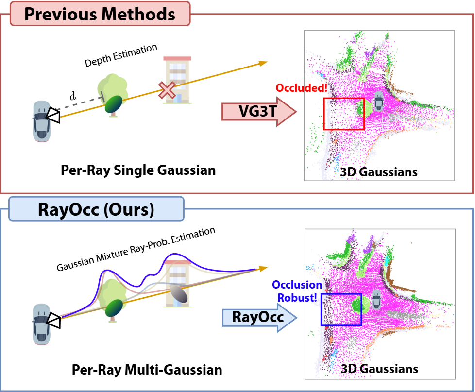
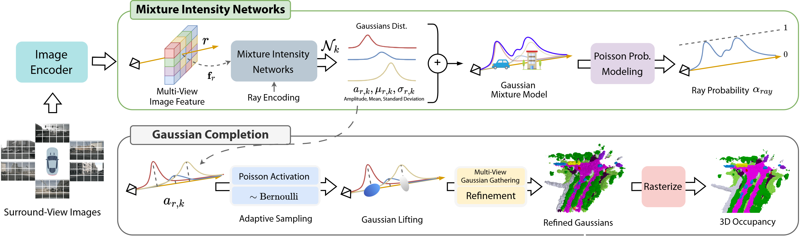
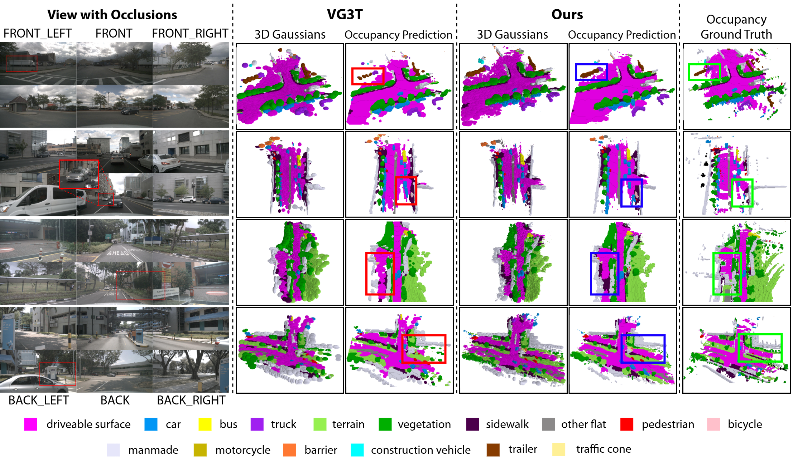

Camera-only 3D semantic occupancy prediction aims to infer voxel-wise scene semantics from multi-view images, yet remains fundamentally challenging due to depth ambiguity and occlusion. Along a single camera ray, multiple spatially separated surfaces may coexist, making occupancy inherently a multi-label existence problem rather than a single- depth estimation task.
However, most existing approaches favor a single dominant depth hypothesis per ray, limiting their ability to model volumetric scenes under complex occlusion. To address this limitation, we introduce RayOcc, an occlusion-aware ray occupancy framework that reformulates ray modeling as multi- label existence prediction

Multi-view images are encoded into per-ray features and concatenated with ray encoding. A Mixture Intensity Network predicts ray-wise mixture parameters, which are converted into multi-label ray occupancy probabilities via Poisson probability modeling. The predicted mixture weights are used for adaptive sampling to initialize a compact set of semantic 3D Gaussians, which are refined and rasterized to produce the final 3D semantic occupancy grid.

Compared with VG3T, RayOcc better preserves partially occluded objects and produces more continuous geometry around object boundaries.
Maintaining several depth hypotheses per ray improves surface coverage behind occluders and reduces spurious predictions near thin structures.

@article{kim2026rayoccocclusionawarerayoccupancy,
author = {Junho Kim and Seongwon Lee},
title = {RayOcc: Occlusion-Aware Ray Occupancy Estimation via Gaussian Mixture Intensity},
journal = {arXiv preprint arXiv:2607.17660},
year = {2026},
eprint = {2607.17660},
archivePrefix = {arXiv},
primaryClass = {cs.CV},
note = {Accepted to IROS 2026},
url = {https://arxiv.org/abs/2607.17660},
}